Proyecto: página web del curso de JavaScript aplicado a elementos HTML.
Git es un sistema de control de versiones distribuido. Guarda el historial de cambios de un proyecto, permite volver a estados anteriores y deja que varias personas trabajen a la vez sin pisarse, gracias a las ramas.
Git Flow es una metodología de trabajo con ramas propuesta por Vincent Driessen. Define dos ramas principales, de vida indefinida, y tres tipos de ramas de apoyo, de vida limitada.
| Rama | Parte de | Se fusiona con | Función |
|---|---|---|---|
| main | - | - | Contiene siempre el código listo para producción |
| develop | main | - | Reúne los últimos cambios de la próxima versión |
| feature/* | develop | develop | Desarrolla una funcionalidad nueva |
| release/* | develop | main y develop | Prepara una versión y la etiqueta |
| hotfix/* | main | main y develop | Corrige errores de producción con rapidez |
En este proyecto la rama de producción se llama main, que equivale a la master de la teoría.
El equipo tiene tres personas trabajando en partes distintas de la misma web. Git Flow separa el trabajo en curso (develop y las features) del código estable (main), reduce los errores humanos y deja un historial ordenado de funcionalidades, versiones y correcciones.
| Elemento | Usuario | Parte de | Se fusiona con | Commits |
|---|---|---|---|---|
| Estructura inicial | Usuario1 | develop | - | ae58f1a, eff81bb, bec6370, 2bcf24e |
| feature/contenidoHTML | Usuario2 | develop | develop | 43eb648, c96154b (merge d84de8b) |
| feature/atributosHTML | Usuario2 | develop | develop | b6cdf84, c3c9601 (merge dc200d5) |
| feature/estilosCSS | Usuario3 | develop | develop | 0b7ea96, 24ede4f (merge 18b10a2) |
| release/v1.0 | Usuario3 | develop | main y develop | ac84c70 (merges 85b1db1 y 83eb00a), etiqueta v1.0 |
| hotfix/mejorasV_1_0 | Usuario1 | main | main y develop | cea8062 (merges dcee0e8 y 6fd777d), etiqueta mejorasV_1_0 |
El Usuario 1 crea el repositorio en GitHub con un README, lo clona, crea la rama develop e inicializa Git Flow. En git flow init se aceptan los valores por defecto, con main como rama de producción, y el prefijo de etiquetas se deja vacío.
git clone https://github.com/YuanYito/Sistema-de-control-de-versiones.git cd Sistema-de-control-de-versiones git branch develop git flow init git push -u origin develop
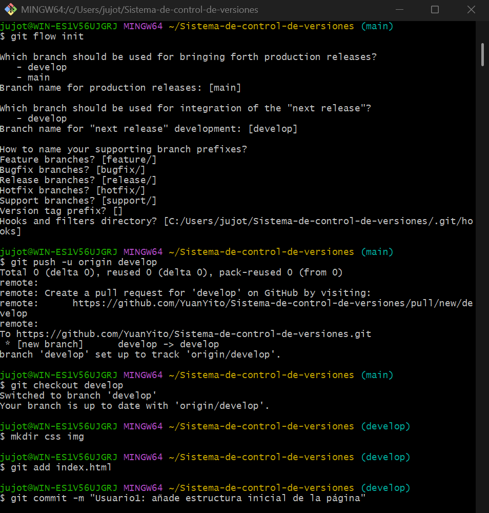
Después crea la estructura inicial directamente en develop: index.html con cabecera, navegación con Home, descripción del curso y pie, y css/style.css con la imagen de fondo de la cabecera. Un último commit corrige el enlace de la imagen y ajusta textos.
git add index.html git commit -m "Usuario1: añade estructura inicial de la página" git add css img git commit -m "Usuario1: añade estilos base y cabecera con imagen de fondo" git push origin develop
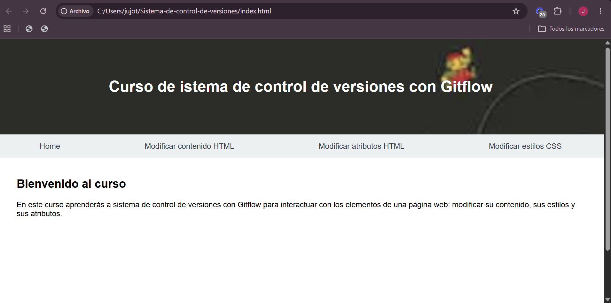
Añade la página contenido.html con ejemplos de innerHTML (cambiar un texto e insertar HTML en una caja) y el enlace en la navegación. Parte de develop y se fusiona de vuelta en develop.
git flow feature start contenidoHTML git add contenido.html git commit -m "Usuario2: añade sección Modificar contenido HTML con ejemplos de innerHTML" git add index.html git commit -m "Usuario2: añade enlace a Modificar contenido HTML en la navegación" git flow feature publish contenidoHTML git flow feature finish contenidoHTML git push origin develop
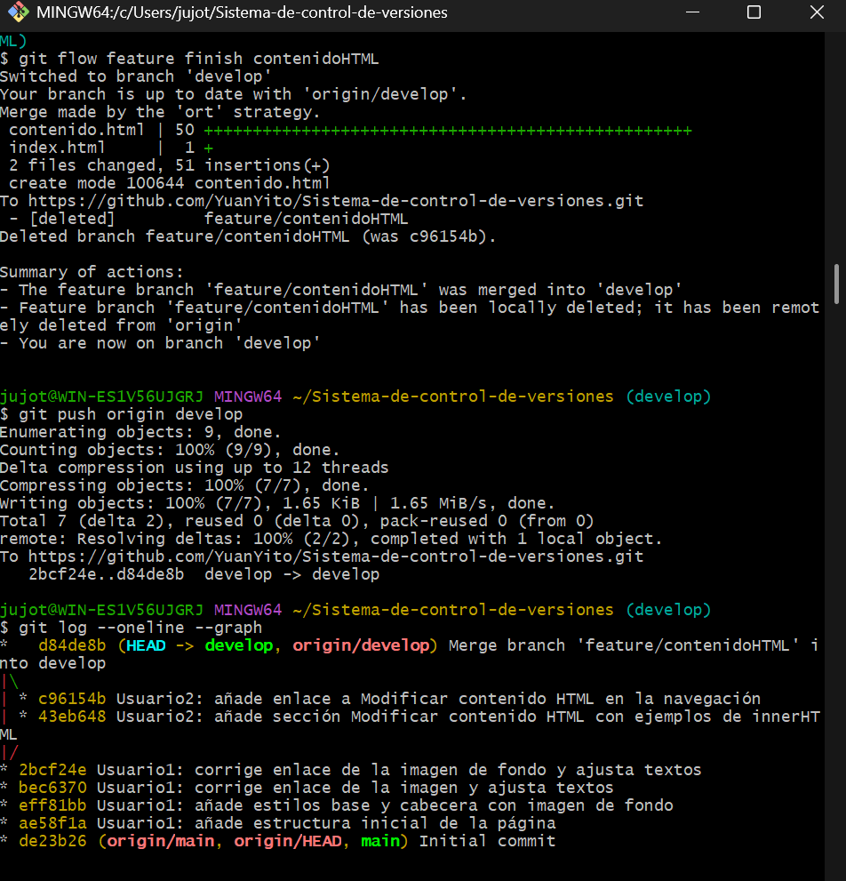
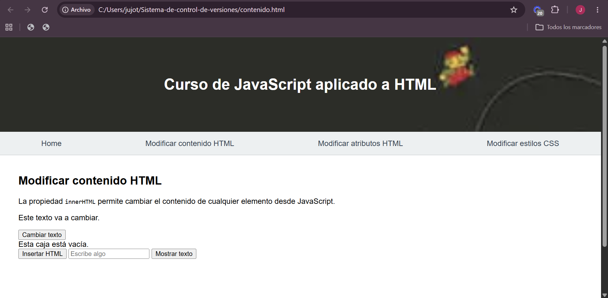
Añade atributos.html con ejemplos de setAttribute (cambiar el tamaño de una imagen y el destino de un enlace) y actualiza la navegación de las páginas existentes. Se hace después de cerrar la primera feature para evitar conflictos en el menú.
git flow feature start atributosHTML git add atributos.html git commit -m "Usuario2: añade sección Modificar atributos HTML con ejemplos de setAttribute" git add index.html contenido.html git commit -m "Usuario2: añade enlace a Modificar atributos HTML en la navegación" git flow feature publish atributosHTML git flow feature finish atributosHTML git push origin develop
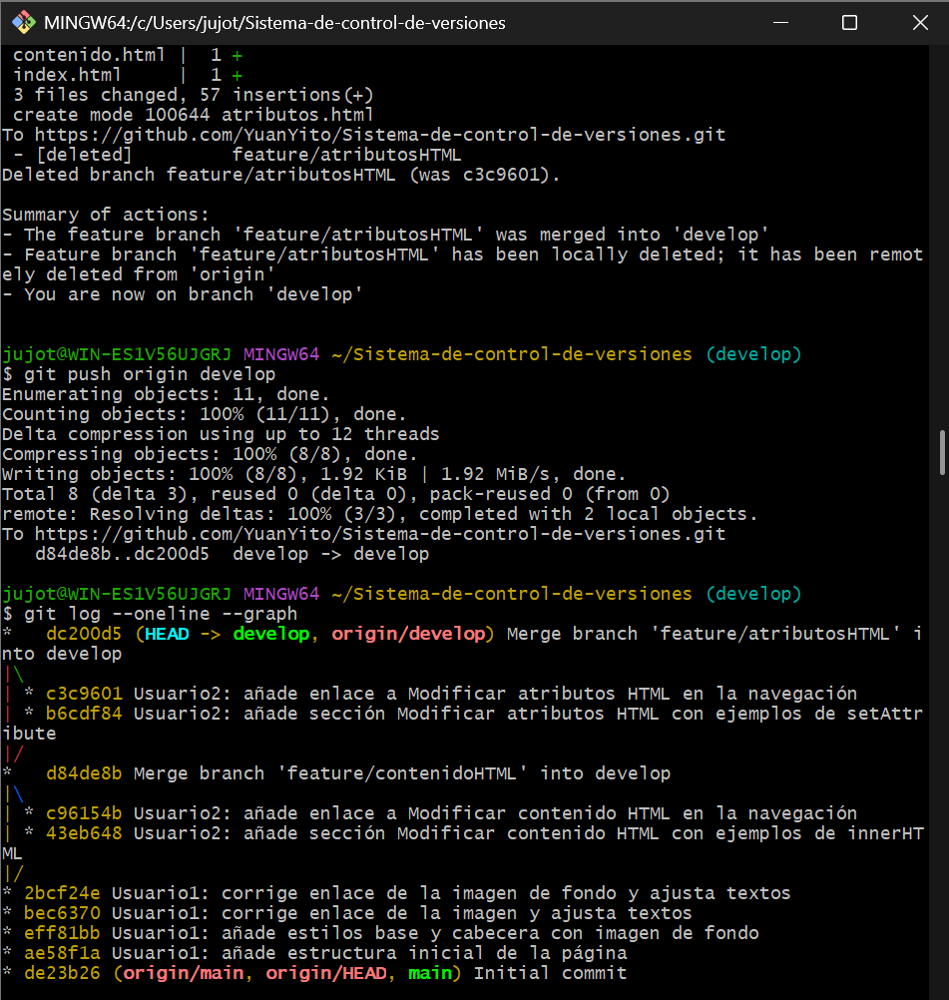
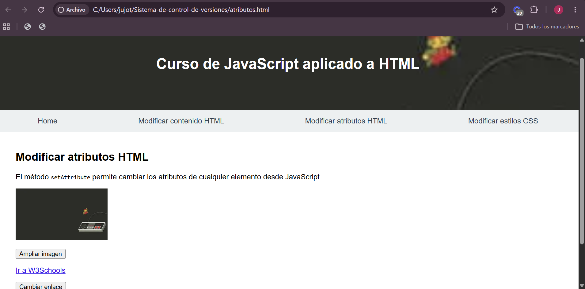
Añade estilos.html con ejemplos comentados de la propiedad style (tamaño de fuente, colores y mostrar u ocultar un elemento) y el enlace en la navegación de las demás páginas.
git flow feature start estilosCSS git add estilos.html git commit -m "Usuario3: añade sección Modificar estilos CSS con ejemplos comentados" git add index.html contenido.html atributos.html git commit -m "Usuario3: añade enlace a Modificar estilos CSS en la navegación" git flow feature publish estilosCSS git flow feature finish estilosCSS git push origin develop
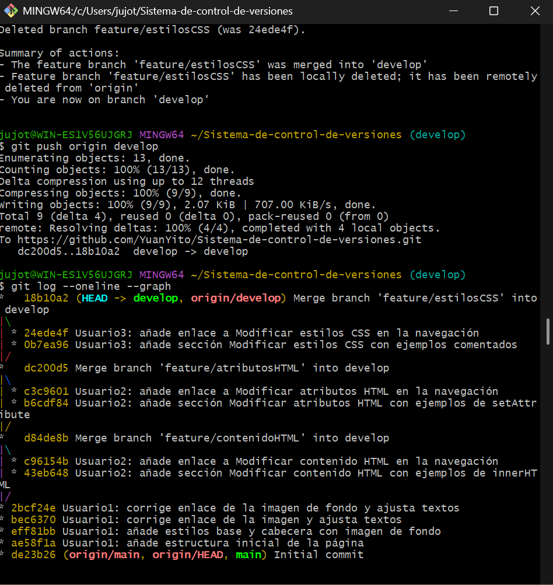
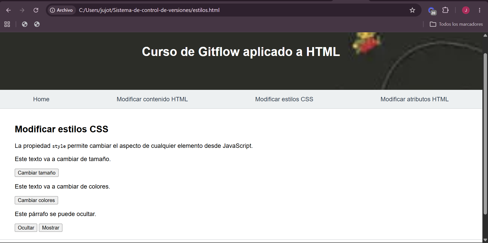
Con las tres features en develop, el Usuario 3 crea la release v1.0, en la que solo se actualiza el README. Al cerrarla, Git Flow la fusiona en main y en develop y crea la etiqueta v1.0. El mensaje de la etiqueta se indica con -m.
git flow release start v1.0 git add README.md git commit -m "Usuario3: prepara la versión v1.0 con descripción en el README" git flow release publish v1.0 git flow release finish -m "Versión v1.0" v1.0 git push origin develop git push origin main git push origin --tags
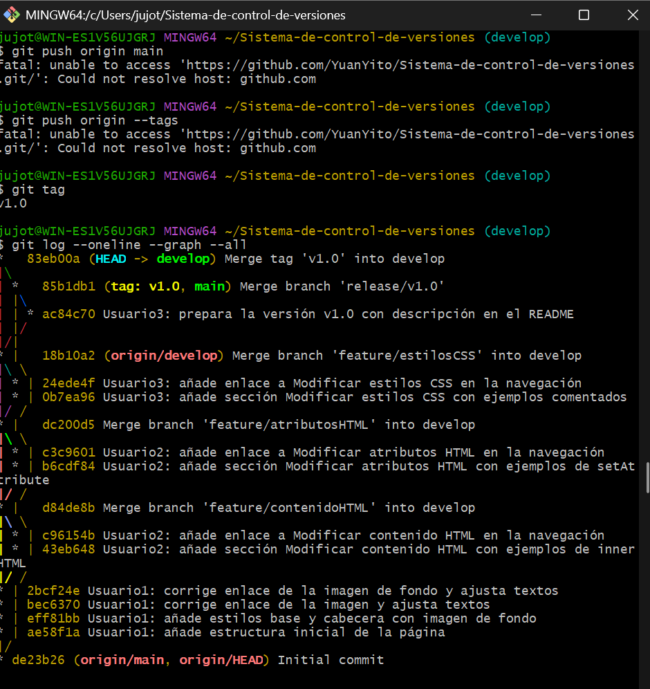
Como encargado de las pruebas, el Usuario 1 mejora la sección de contenido del Usuario 2 con un tercer ejemplo: un campo de texto cuyo contenido se muestra en la página con textContent. Un hotfix parte de main y se fusiona en main y en develop. Como el prefijo de etiquetas está vacío, la etiqueta se llama mejorasV_1_0.
git flow hotfix start mejorasV_1_0 git add contenido.html git commit -m "Usuario1: mejora la sección de contenido con un ejemplo de texto introducido por el usuario" git flow hotfix publish mejorasV_1_0 git flow hotfix finish -m "Mejoras v1.0" mejorasV_1_0 git push origin develop git push origin main git push origin --tags
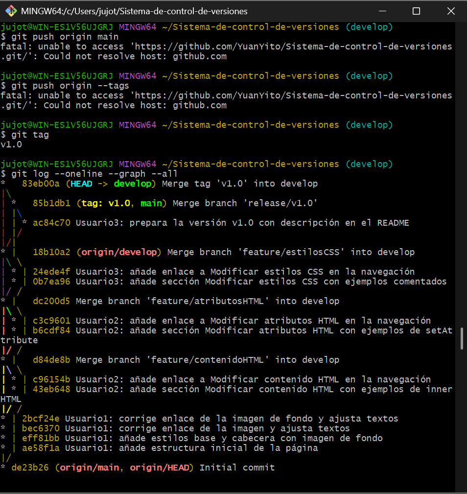
El historial completo muestra las tres features, la release y el hotfix integrados en develop y main. Cada commit indica el usuario que lo realiza en su mensaje.
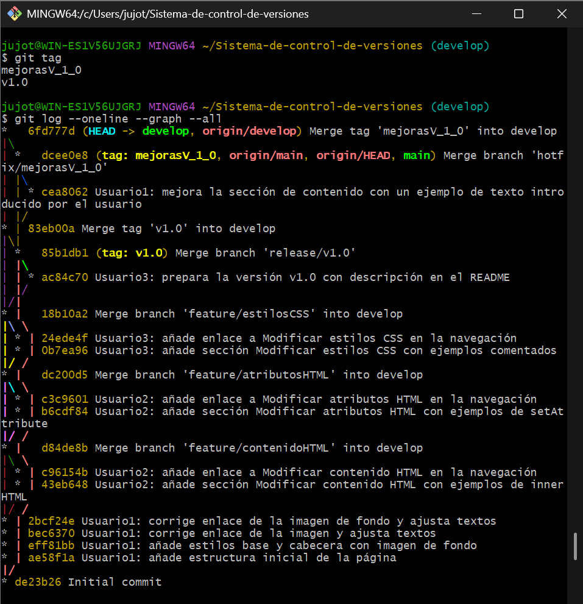
El repositorio contiene las ramas main, develop y gh-pages (esta documentación), y se ha dado acceso como colaborador a IvanPallares.
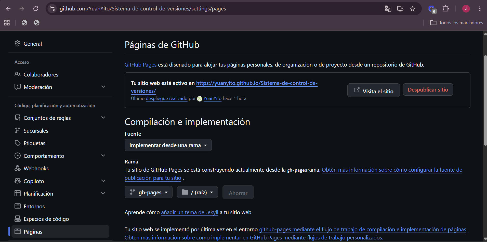
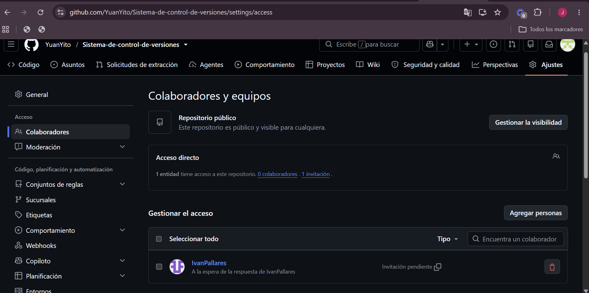